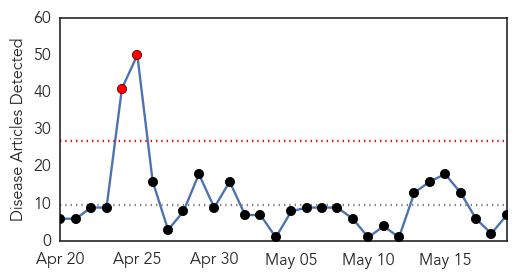
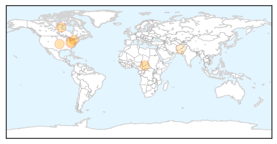

30 Day Trends
Web: 2 alerts, 0 warnings
Twitter: 0 alerts, 0 warnings
Top Articles:
- 0.971
- Measles spreading in Chad amid weak vaccination coverage - Chad
- 0.918
- Study: Don't delay measles vaccine – The Chart
- 0.911
- Delaying Measles-Related Vaccines May Raise Seizure Risk: Study
- 0.904
- Measles vaccinations offered at private St. John's clinic
- 0.760
- Test results show no measles exposure at Parma schools
- 0.632
- Dr. John Snyder: State will shed light on childhood vaccination gap
- 0.559
- Measles outbreak sparks wider concerns in Pakistan — SOS Children
Top Tweets:
-
No tweets found for May 19, 2014
Web/News Articles
Tweets

Article Locations
Article Confidences